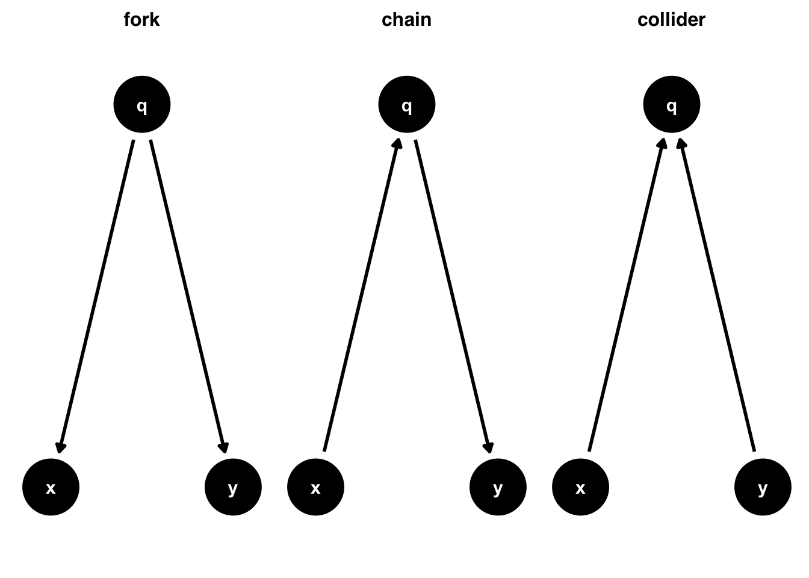

library(tidyverse) # manipulación de datos
library(broom) # convertir modelos a data frames
library(causalworkshop) # datos y librerías
library(propensity) # estimación de propensión
library(MatchIt) # match things
library(ggdag) # crear DAGs
library(dagitty) # usar lógica de DAGs
library(halfmoon) # graficos
library(rsample) # remuestreo
library(tipr) # sensitivity analysis Propensity Score Matching
Son Mendizábal
Contexto
Un stakeholder pide “drivers” de un acontecimiento concreto, ¿qué está pidiendo? ¿Un modelo para predecir el suceso? ¿Un conocimiento más profundo de las causas del suceso?
Es una petición vaga, pero suena a interés causal.
Las tres prácticas comunes de análisis:
- Descripción
- Predicción
- Causalidad
Técnicas de causalidad
\(X\) causa \(Y\) si… intervenimos y cambiamos \(X\) sin modificar lo demás… y \(Y\) cambia.
En la práctica, esto significa utilizar técnicas como:
- Diseño de un estudio (por ejemplo, un ensayo aleatorio)
Hay varias razones por las que no podríamos realizar un experimento aleatorizado, entre ellas la ética, el costo y/o el tiempo.
- Métodos estadísticos (como scores de propensión) para calcular un efecto no sesgado de la exposición sobre el resultado.
Workflow de inferencia causal
Análisis causal mediante unos pasos clave:
- Especificar pregunta causal
- Dibujar hipótesis mediante un diagrama causal
- Modelar supuestos
- Diagnosticar modelos
- Estimar el efecto causal
- Estimar varianza del efecto
Datos
Ejercición y datos simulados por el Dr. Andrew Heiss tomados del curso PMAP 8141 Program Evaluation for Public Service de Georgia State University:
OBJ: saber si el uso de mosquiteros disminuye el riesgo de que un hogar contraiga malaria.
Universo de 1,752 hogares de un país sin nombre y tienen variables relacionadas con factores ambientales, la salud individual y las características del hogar.
Los datos no son experimentales: los investigadores no tienen control sobre quién utiliza mosquiteros, y cada hogar decide por sí mismo si los solicita gratuitos o las compra, y si los utiliza en caso de tenerlas.
Setup
Paquetes de R
La estructura de los datos y una muestra se presentan a continuación:
tibble [1,752 × 11] (S3: tbl_df/tbl/data.frame)
$ id : int [1:1752] 1 2 3 4 5 6 7 8 9 10 ...
$ net : logi [1:1752] FALSE FALSE FALSE FALSE FALSE FALSE ...
$ net_num : int [1:1752] 0 0 0 0 0 0 0 0 0 0 ...
$ malaria_risk : num [1:1752] 38 48 32 55 36 30 29 45 51 42 ...
$ income : num [1:1752] 779 700 1083 753 919 ...
$ health : num [1:1752] 35 35 58 68 46 37 58 30 18 64 ...
$ household : num [1:1752] 1 3 3 3 5 3 1 2 3 3 ...
$ eligible : logi [1:1752] FALSE FALSE FALSE FALSE FALSE FALSE ...
$ temperature : num [1:1752] 18.3 18.6 24.2 19.1 21.2 20.2 18.9 28.8 19.9 21.4 ...
$ insecticide_resistance: num [1:1752] 38 40 70 57 59 49 52 42 66 45 ...
$ genetic_resistance : int [1:1752] 0 0 0 0 0 0 0 1 0 0 ...Variables
- Riesgo de malaria (
malaria_risk): La proba de que alguien en el hogar se infecte de malaria. Se mide en una escala de 0 a 100, donde 100 indica mayor riesgo. - Mosquitero (
net and net_num): Variable binaria que indica si el hogar utilizó mosquiteros. - Elegible para el programa (
eligible): Variable binaria que indica si el hogar es elegible para el programa de mosquiteros gratuitos. - Ingresos (
income): Los ingresos mensuales del hogar, en dólares. - Temperatura (
temperature): La temperatura media nocturna, en grados Celsius. - Salud (
health): Estado de salud autodeclarado en el hogar. Se mide en una escala de 0 a 100. Los valores más altos indican mejor salud. - Número de personas en el hogar (
household): Número de personas que viven en el hogar - Resistencia a insecticidas (
insectide_resistance): Algunas cepas de mosquitos son más resistentes a los insecticidas y, por tanto, suponen un mayor riesgo de infectar a las personas con malaria. Se mide en una escala de 0 a 100, en la que los valores más altos indican una mayor resistencia. - Resistencia genética (
genetic_resistance): Variable binaria que indica si el hogar tiene resistencia genética la malaria, lo que reduce el riesgo de malaria.
[Caso Malaria] Proceso de análisis
Para calcular este efecto
- Especificar pregunta causal (para el efecto medio del tratamiento ATE)
- Dibujar hipótesis mediante un diagrama causal (utilizando DAG)
- Modelar supuestos (utilizando el score de propensión)
- Diagnosticar modelos (comprobando el equilibrio de los factores de confusión tras la ponderación)
- Estimar el efecto causal (mediante ponderación de probabilidad inversa y matching)
- Estimar varianza del efecto (mediante bootstrap)
1. Pregunta causal
Definición de los términos:
- exposure (la causa)
- outcome (el efecto)
- criterios de elegibilidad (¿para quién?)
- tiempo cero (¿cuándo se empezó a seguir a los participantes?)
- población objetivo, (¿para quién podemos estimar un efecto de resultado?)
- periodo de seguimiento (¿cuándo?)
[Caso Malaria] Riesgo de malaria
Utilizaremos datos simulados para responder a una pregunta más específica: ¿Disminuye el riesgo de contraer la malaria al cabo de 1 año si se utilizan mosquiteros tratados con insecticida en comparación con si no se utilizan?
- exposure: uso de mosquiteros tratados con insecticida
- outcome riesgo de contraer malaria
- criterios de elegibilidad: hogares
- tiempo cero: inicio de verano
- población objetivo: hogares de un país sin nombre
- periodo de seguimiento: un año
[Caso Malaria] Distribución del riesgo
La distribución del riesgo observado en los que usan el mosquitero es el siguiente:

2. Diagrama causal
Los diagramas causales que utilizamos también se denominan grafos acíclicos dirigidos (DAG). Estos grafos son dirigidos porque incluyen flechas que van en una dirección específica. Son acíclicos porque no van en círculos; por ejemplo, una variable no puede causarse a sí misma.
El tipo de ruta fork es una ruta de confusión. Dado que \(q\) causa tanto \(x\) como \(y\), \(x\) y \(y\) tendrán una asociación espuria. Ambos contienen información de \(q\), su causa mutua.
Esa relación causal mutua hace que \(x\) y \(y\) se asocien estadísticamente. El ajuste por \(q\) bloqueará el sesgo de confusión y nos dará la verdadera relación entre \(x\) e \(y\).
DEF: Un factor de confusión es una causa común de exposición y resultado.
[Caso Malaria] Diagrama de causalidad

- El riesgo de malaria depende del uso de mosquiteros, los ingresos, la salud, la temperatura, la resistencia a los insecticidas y la resistencia genética.
- El uso de mosquiteros depende de los ingresos, la salud, la temperatura, la elegibilidad para el programa de mosquiteros gratuitos, el número de personas en el hogar y la resistencia genética.
- La elegibilidad para los programas de mosquiteros gratuitos viene determinada por los ingresos y el número de personas en un hogar.
- La salud depende de los ingresos.
[Caso Malaria] Hipótesis de efecto
Siguiendo la lógica de do-calculus, podemos encontrar todos los nodos que confunden la relación entre el uso de mosquiteros y el riesgo de malaria, ya que esos nodos abren caminos secundarios y distorsionan el efecto causal que nos interesa.
La función adjustmentSets() enumera conjuntos de covariables que (asintóticamente) permiten la estimación insesgada de efectos causales a partir de datos observacionales. Se asume que el gráfico causal de entrada es correcto.
3. Modelar hipótesis
Propensity score matching simula la relación entre la exposición y el resultado si hubiéramos realizado un ensayo aleatorio. La correlación entre la exposición y el resultado estimará el efecto causal tras estimar score de propensión.
Rosenbaum y Rubin (1983) demostraron que en los estudios observacionales el condicionamiento a los scores de propensión puede conducir a estimaciones no sesgadas del efecto siempre y cuando se cumplan los supuestos:
- No hay factores de confusión no medidos
- Cada sujeto tiene una probabilidad distinta de cero de recibir una u otra exposición
Score de propensión
Al ajustar un modelo de score de propensión, queremos condicionar todos los factores de confusión conocidos.
DEF: Un score de propensión es la probabilidad de estar en el grupo de exposición, condicionada a las covariables observadas.
Supongamos que recopilamos información completa sobre todos estos factores de confusión. En ese caso, podríamos determinar la probabilidad de exposición de cada hogar y utilizarla para evaluar un análisis que identifique la relación entre la exposición y algún resultado.
Hay muchas formas de generar scores de propensión (como la regresión logística, la regresión probit e incluso técnicas de aprendizaje automático como los bosques aleatorios y las redes neuronales), pero la regresión logística es probablemente el método más común.
La variable resultado en los modelos de regresión logística debe ser binaria, y las variables explicativas que se incluyen en el modelo ayudan a explicar la variación en la probabilidad del resultado binario.
Hay muchas formas de incorporar el score de propensión a un análisis. Las técnicas más utilizadas incluyen la estratificación (estimación del efecto causal dentro del estrato de puntuación de propensión), el emparejamiento, la ponderación y el ajuste directo de covariables.
Matching
El objetivo es que las observaciones expuestas y no expuestas sean intercambiables con respecto a los factores de confusión que hemos propuesto en nuestro DAG (de forma que podamos utilizar el efecto observado para una para estimar el contrafactual para la otra).
Una forma de hacerlo es garantizar que cada observación de nuestra muestra de análisis tenga al menos una observación de la exposición opuesta que tenga valores coincidentes para cada uno de estos factores de confusión.
[Caso Malaria] Score de propensión
Construimos el modelo que predice el uso de mosquitero en función de ingreso, temperaturas, salud y resistencia a malaria.

4. Diagnostico
Asumiendo un escenario con dos niveles de exposición: - Expuesto \(X = 1\) - No expuesto \(X=0\)
De tal forma que, los resultados potenciales son: - Con exposición (\(Y(1) = [Y_1|X=1]\)) - Sin exposición (\(Y(0) = [Y_0|X=0]\)).
Entonces, la diferencia entre estos resultados para comprender el impacto de la exposición en el resultado es \(Y(1) - Y(0)\).
Los supuestos son:
- Consistencia
- Intercambiabilidad
- Positividad
Estos supuestos se denominan a veces condiciones de identificabilidad, ya que necesitamos que se cumplan para identificar las estimaciones causales.
Consistencia
- Consistencia: Suponemos que la pregunta causal que afirma responder es coherente con la que realmente responde el análisis. Matemáticamente, esto significa: \[ Y_\texttt{obs} = (X)[Y(1)] + (1-X)[Y(0)]. \]
En otras palabras, el resultado observado es exactamente igual al resultado potencial bajo la exposición recibida. Dos formas habituales de hablar de este supuesto son:
Consistencia con exposición bien definida: Suponemos que para cada valor de la exposición, no hay diferencia entre los sujetos en la asignación de esa exposición. Dicho de otro modo, no existen múltiples versiones del tratamiento.
Consistencia sin interferencias: Suponemos que el resultado (técnicamente todos los resultados potenciales, independientemente de si se observan o no) para cualquier sujeto no depende de la exposición de otro sujeto.
Este supuesto a veces se denomina como supuesto de valor de tratamiento unitario estable (stable-unit-treatment-value-assumption) o SUTVA (Imbens y Rubin, 2015).
Intercambiabilidad
Suponemos que dentro de los niveles de las variables relevantes o factores de confusión, los sujetos expuestos y no expuestos tienen la misma probabilidad de experimentar cualquier resultado antes de la exposición; es decir, los sujetos expuestos y no expuestos son intercambiables.
Este supuesto a veces se denomina ausencia de factores de confusión no medidos.
Positividad
Suponemos que dentro de cada nivel y combinación de las variables de estudio utilizadas para lograr la intercambiabilidad, hay sujetos expuestos y no expuestos. Dicho de otro modo, cada individuo tiene alguna posibilidad de experimentar cada nivel de exposición disponible. A veces, esto se denomina suposición probabilística.
Ponderar
Es común en estos casos observar desbalance en la distribución de los scores entre el grupo de expuestos y no expuestos. Esto es por los conteos más altos del grupo de no expuestos.
La ponderación permite que el score sea suave, aplicando una transformación que permita, en promedio, que las covariables de interés estén equilibradas en la población ponderada. Para ello, construiremos un peso utilizando el score de propensión.
La siguiente ponderación de probabilidad inversa permitirá estimar el efecto usando la ponderación \(w_{ATE}\) de efecto promedio del tratamiento del score de propensión \(p\), donde \(X\) representa el valor de exposición o tratamiento.
\[ w_{ATE} = \frac{X}{p} - \frac{(1-X)}{(1-p)} \]
[Caso Malaria] Ponderación
Algunos puntos que podemos resaltar para obtener el diagnóstico sobre la distribución de los scores son:
- Buscar la falta de empalme como posible problema de positividad. Pero, un empalme excesivo puede indicar un modelo deficiente.
- El efecto medio del tratamiento entre los tratados es más fácil de estimar con precisión (debido a los conteos más altos) que en el grupo de control o no expuesto.
- Un único valor atípico en cualquiera de los grupos en relación con el intervalo podría ser un problema y justifica la revisión de los datos.

En este caso, la función wt_ate() calcula los pesos de los scores de propensión.
net_data_wts <-
propensity_model |>
augment(newdata = net_data_full,
type.predict = "response") |>
rename(scores = .fitted) |>
mutate(wts = wt_ate(scores, net))
net_data_wts |>
select(net, scores, wts) |>
head(3)# A tibble: 3 × 3
net scores wts
<lgl> <dbl> <dbl>
1 FALSE 0.205 1.26
2 FALSE 0.179 1.22
3 FALSE 0.268 1.37
[Caso Malaria] Evaluación de balance de cofounders
Una forma de evaluar el balance de las observaciones entre los cofounders es al calcular las diferencias de medias estandarizadas (SMD) para cada factor de confusión con y sin ponderaciones.

[Caso Malaria] Matching
matched <- matchit(
net ~ income + health + temperature + genetic_resistance,
data = net_data_wts,
distance = "glm",
link = "logit",
s.weights = net_data_wts$wts,
replace = F
)
net_matched_wts <- get_matches(matched)
matchedA matchit object
- method: 1:1 nearest neighbor matching without replacement
- distance: Propensity score
- estimated with logistic regression
- sampling weights included in estimation
- number of obs.: 1752 (original), 908 (matched)
- sampling weights: present
- target estimand: ATT
- covariates: income, health, temperature, genetic_resistance[Caso Malaria] Muestra balanceada
Call:
matchit(formula = net ~ income + health + temperature + genetic_resistance,
data = net_data_wts, distance = "glm", link = "logit", s.weights = net_data_wts$wts,
replace = F)
Summary of Balance for All Data:
Means Treated Means Control Std. Mean Diff. Var. Ratio
distance 0.5054 0.5048 0.0463 1.1746
income 888.4191 895.8192 -0.0369 1.1260
health 49.4905 50.0986 -0.0298 1.1443
temperature 24.0695 23.9718 0.0231 1.0839
genetic_resistance 0.1005 0.0991 0.0044 .
eCDF Mean eCDF Max
distance 0.0159 0.0523
income 0.0148 0.0611
health 0.0154 0.0597
temperature 0.0112 0.0499
genetic_resistance 0.0013 0.0013
Summary of Balance for Matched Data:
Means Treated Means Control Std. Mean Diff. Var. Ratio
distance 0.5054 0.5017 0.2977 1.0547
income 888.4191 939.1780 -0.2534 1.0324
health 49.4905 53.9216 -0.2171 1.1587
temperature 24.0695 23.5516 0.1225 1.0346
genetic_resistance 0.1005 0.0913 0.0305 .
eCDF Mean eCDF Max Std. Pair Dist.
distance 0.0902 0.1391 0.0160
income 0.0661 0.1203 0.6924
health 0.0469 0.1332 0.8108
temperature 0.0311 0.0708 0.9842
genetic_resistance 0.0092 0.0092 0.8939
Sample Sizes:
Control Treated
All (ESS) 1198.03 357.71
All 1298. 454.
Matched (ESS) 418.3 357.71
Matched 454. 454.
Unmatched 844. 0.
Discarded 0. 0. | id | subclass | weights | net | malaria_risk | income | health | temperature | insecticide_resistance | genetic_resistance | scores | wts | distance |
|---|---|---|---|---|---|---|---|---|---|---|---|---|
| 16 | 1 | 2.739172 | TRUE | 15 | 1251 | 96 | 21.8 | 24 | 0 | 0.3650738 | 2.739172 | 0.4802468 |
| 395 | 1 | 1.665123 | FALSE | 18 | 1429 | 84 | 26.2 | 51 | 0 | 0.3994436 | 1.665123 | 0.4799922 |
| 18 | 2 | 4.354160 | TRUE | 28 | 892 | 49 | 20.2 | 58 | 0 | 0.2296654 | 4.354160 | 0.4979628 |
| 1036 | 2 | 1.308996 | FALSE | 37 | 931 | 38 | 20.9 | 74 | 0 | 0.2360556 | 1.308996 | 0.4979406 |
| 19 | 3 | 2.543730 | TRUE | 18 | 1273 | 94 | 19.9 | 67 | 0 | 0.3931235 | 2.543730 | 0.4759100 |
| 1302 | 3 | 1.718578 | FALSE | 20 | 1332 | 79 | 19.8 | 63 | 0 | 0.4181236 | 1.718578 | 0.4737228 |
| 22 | 4 | 2.874226 | TRUE | 17 | 1292 | 63 | 24.8 | 63 | 0 | 0.3479197 | 2.874226 | 0.4855308 |
| 1144 | 4 | 5.189003 | FALSE | 17 | 1179 | 73 | 19.8 | 43 | 1 | 0.8072848 | 5.189003 | 0.4855857 |
| 28 | 5 | 3.687558 | TRUE | 22 | 1235 | 70 | 31.0 | 54 | 0 | 0.2711821 | 3.687558 | 0.4989465 |
| 1062 | 5 | 1.307345 | FALSE | 41 | 979 | 71 | 23.9 | 66 | 0 | 0.2350908 | 1.307345 | 0.4989181 |
| 30 | 6 | 5.672105 | TRUE | 34 | 798 | 36 | 23.6 | 56 | 0 | 0.1763014 | 5.672105 | 0.5094343 |
| 1176 | 6 | 1.227997 | FALSE | 46 | 897 | 55 | 27.0 | 50 | 0 | 0.1856658 | 1.227997 | 0.5094434 |
| 32 | 7 | 4.938694 | TRUE | 29 | 933 | 52 | 26.0 | 48 | 0 | 0.2024827 | 4.938694 | 0.5060671 |
| 1409 | 7 | 1.242746 | FALSE | 33 | 852 | 24 | 22.8 | 27 | 0 | 0.1953301 | 1.242746 | 0.5060648 |
| 37 | 8 | 4.391741 | TRUE | 26 | 892 | 31 | 20.1 | 53 | 0 | 0.2277002 | 4.391741 | 0.4988668 |
| 258 | 8 | 1.375431 | FALSE | 23 | 1232 | 53 | 30.3 | 23 | 0 | 0.2729554 | 1.375431 | 0.4988720 |
| 44 | 9 | 3.259213 | TRUE | 23 | 1240 | 82 | 27.3 | 79 | 0 | 0.3068225 | 3.259213 | 0.4914008 |
| 617 | 9 | 1.428189 | FALSE | 27 | 1189 | 74 | 25.6 | 56 | 0 | 0.2998126 | 1.428189 | 0.4913803 |
| 45 | 10 | 1.398386 | TRUE | 18 | 970 | 56 | 22.2 | 33 | 1 | 0.7151104 | 1.398386 | 0.5012016 |
| 616 | 10 | 1.336823 | FALSE | 32 | 1183 | 84 | 31.3 | 50 | 0 | 0.2519579 | 1.336823 | 0.5012089 |
5. Estimar efecto causal
Dependiendo del objetivo del estudio o de la pregunta causal, es posible que queramos estimar diferentes estimandos.
A continuación, describiremos dos de los estimadores causales más comunes, sus poblaciones objetivo, las preguntas causales que pueden ayudar a responder y los métodos utilizados para estimarlos.
Estimadores:
- Average treatment effect (ATE). La población objetivo es la muestra total o la población de interés.
En este caso, el estimando es el valor esperado de la diferencia en los resultados potenciales de todos los individuos.
\[ E[Y(1)- Y(0)] \]
Un ejemplo de pregunta de investigación es ¿Debe aplicarse una política a todos los pacientes elegibles?.
La siguiente ponderación de probabilidad inversa le permitirá estimar ATE utilizando la ponderación del score de propensión:
\[ w_{ATE} = \frac{X}{p} - \frac{(1-X)}{(1-p)} \]
La mayoría de los ensayos controlados aleatorios se diseñan con ATE como estimación objetivo.
- Average treatment effect among the treated (ATT). La población objetivo para estimar el efecto medio del tratamiento entre los tratados (ATT) es la población expuesta (tratada).
Este estimador causal condiciona a aquellos en el grupo expuesto:
\[ E[Y(1)- Y(0)|X=1] \]
Ejemplos de preguntas de investigación son: ¿Deberíamos detener nuestra campaña de marketing para aquellos que actualmente lo reciben? o ¿Deberían los proveedores médicos dejar de recomendar el tratamiento a aquellos que actualmente lo reciben? (Greifer y Stuart 2021)
ATT puede estimarse mediante ponderación. La ponderación se estima de la forma:
\[ w_{ATT} = X - \frac{(1-X) \cdot p}{(1-p)} \]
Es común usar ATT cuando se utiliza matching, todas las observaciones expuestas se incluyen y se “emparejan” con las observaciones de control, algunas de las cuales pueden descartarse.
[Caso Malaria] Estimación de diferencia
Estimación de diferencia \([Y(1) - Y(0)]\):
Estimación naive
# A tibble: 2 × 7
term estimate std.error statistic p.value conf.low conf.high
<chr> <dbl> <dbl> <dbl> <dbl> <dbl> <dbl>
1 (Intercept) 43.9 0.377 116. 0 43.2 44.7
2 netTRUE -16.4 0.741 -22.1 1.10e-95 -17.8 -14.9Estimación matched
# A tibble: 2 × 7
term estimate std.error statistic p.value conf.low conf.high
<chr> <dbl> <dbl> <dbl> <dbl> <dbl> <dbl>
1 (Intercept) 40.8 0.594 68.6 0 39.6 42.0
2 netTRUE -13.3 0.840 -15.8 9.84e-50 -14.9 -11.6Estimación matched + weights
(reg_model <- lm(malaria_risk ~ net,
data = net_matched_wts,
weights = weights) |>
tidy(conf.int = TRUE))# A tibble: 2 × 7
term estimate std.error statistic p.value conf.low conf.high
<chr> <dbl> <dbl> <dbl> <dbl> <dbl> <dbl>
1 (Intercept) 39.1 0.832 47.1 1.44e-245 37.5 40.8
2 netTRUE -7.11 0.966 -7.36 4.04e- 13 -9.01 -5.226. Estimación de varianza
Una forma de estimar la varianza del estimador es mediante Bootstrap Sampling. Bootstrap es un algoritmo sencillo para calcular estimaciones o estadísticos medianteremuestreo con sustitución.
Resulta útil cuando no existe una solución de forma cerrada para calcular algo, como suele ocurrir en la inferencia causal (sobre todo para los errores estándar), y cuando sospechamos que los cálculos paramétricos no son válidos para una situación determinada.
El proceso consiste en:
- Re muestrear los datos con reemplazo
- Ajustar el estimador a la muestra Bootstrap
- Repite R veces.
Finalmente, se obtiene la distribución de estimaciones, con la que podemos calcular estadísticos descriptivos de población, como estimaciones puntuales, errores estándar e intervalos de confianza.
[Caso Malaria] Muestras bootstrap
set.seed(19871002)
bootstrapped_net_data <- bootstraps(
net_data_full,
times = 500,
apparent = TRUE
)
bootstrapped_net_data |> head(6)# A tibble: 6 × 2
splits id
<list> <chr>
1 <split [1752/634]> Bootstrap001
2 <split [1752/639]> Bootstrap002
3 <split [1752/654]> Bootstrap003
4 <split [1752/651]> Bootstrap004
5 <split [1752/624]> Bootstrap005
6 <split [1752/664]> Bootstrap006List of 4
$ data : tibble [1,752 × 7] (S3: tbl_df/tbl/data.frame)
..$ net : logi [1:1752] FALSE FALSE FALSE FALSE FALSE FALSE ...
..$ malaria_risk : num [1:1752] 38 48 32 55 36 30 29 45 51 42 ...
..$ income : num [1:1752] 779 700 1083 753 919 ...
..$ health : num [1:1752] 35 35 58 68 46 37 58 30 18 64 ...
..$ temperature : num [1:1752] 18.3 18.6 24.2 19.1 21.2 20.2 18.9 28.8 19.9 21.4 ...
..$ insecticide_resistance: num [1:1752] 38 40 70 57 59 49 52 42 66 45 ...
..$ genetic_resistance : int [1:1752] 0 0 0 0 0 0 0 1 0 0 ...
$ in_id : int [1:1752] 1680 37 1034 859 627 830 1517 1600 1088 1460 ...
$ out_id: logi NA
$ id : tibble [1 × 1] (S3: tbl_df/tbl/data.frame)
..$ id: chr "Bootstrap010"
- attr(*, "class")= chr [1:2] "boot_split" "rsplit"Ajustar workflow
# Función de workflow
fit_psm <- function(split) {
# convierte muestra bootstrapped a df
.df <- analysis(split)
formula_net <- net ~ income + health + temperature + genetic_resistance
# Estimas scores
p_model <- glm(
formula_net,
data = .df,
family = binomial()
)
# Calculo de pesos
.df <- p_model |>
augment(type.predict = "response", data = .df) |>
mutate(wts = wt_ate(.fitted, net))
# Match de hogares
matched <- matchit(
formula_net,
data = .df,
distance = "glm",
link = "logit",
s.weights = .df$wts,
replace = T
)
.df <- get_matches(matched)
# Estimación de efecto
lm(malaria_risk ~ net, data = .df, weights = wts) |>
tidy()
}
# Ejecución de la función a cada muestra
ipw_results <-
bootstrapped_net_data |>
mutate(boot_fits = map(splits, fit_psm))
# Muestra de un elemento
ipw_results$boot_fits[[30]]# A tibble: 2 × 5
term estimate std.error statistic p.value
<chr> <dbl> <dbl> <dbl> <dbl>
1 (Intercept) 33.6 0.800 42.0 9.45e-211
2 netTRUE -2.19 0.946 -2.31 2.09e- 2Resúmen de distribución
ipw_results |>
mutate(
estimate = map_dbl(
boot_fits,
# pull the `estimate` for `netTRUE` for each fit
\(.fit) .fit |>
filter(term == "netTRUE") |>
pull(estimate)
)
) |>
ggplot(aes(estimate)) +
geom_histogram(fill = "#006EC1", color = "white", alpha = 0.8) +
geom_vline(xintercept = -10, color = "black", linetype = 1, size = 1)
Conclusión
boot_estimate <- ipw_results |>
# calcula el estadístico T con IC
int_t(boot_fits) |>
filter(term == "netTRUE")
boot_estimate |> knitr::kable()| term | .lower | .estimate | .upper | .alpha | .method |
|---|---|---|---|---|---|
| netTRUE | -10.74012 | -7.827981 | -2.94132 | 0.05 | student-t |
La estimación del efecto de todos los hogares que utilizan mosquiteros frente a ningún hogar que los utiliza sobre el riesgo de malaria es de -7.8 (IC del 95%: -10.7; -2.9).
Se puede concluir que los mosquiteros parecen reducir el riesgo en este estudio.
Dudas
¡Gracias!
Referencias
Repositorio Código Github
- Matching and inverse probability weighting. Dr. Andrew Heiss. Georgia State University. Andrew Young School of Policy Studies. October 2, 2020.
- Causal Inference in R Barrett M, D’Agostino McGowan L, Gerke T. r-causal.org. March 2024.
- Causal Inference: What If. Hernán, M. A. and Robins, J. M. Chapman Hall/CRC. 2021.
- Greifer, Noah, and Elizabeth A Stuart. 2021. Choosing the Estimand When Matching or Weighting in Observational Studies. arXiv Preprint arXiv:2106.10577.
- Rosenbaum, Paul R and Rubin, Donald B. 1983. The central role of the propensity score in observational studies for causal effects. Biometrika. volume 70, pages 41–55.
- Netflix Technology Blog. 2022. A Survey of Causal Inference Applications at Netflix.
- Alexander L, Lopes B, Ricchetti-Masterson K and Yeatts B. 2015. Ecologic Studies. Second Edition. UNC CH Department of Epidemiology Medic.
Librerías
tidyverseWickham H, et al. (2019). R package version 2.0.0broomRobinson D, Hayes A, Couch S (2023). R package version 1.0.5causalworkshopBarrett M, D’Agostino McGowan L (2024). R package version 0.1.0propensityBarrett M (2024). R package version 0.0.0.9000MatchItHo D, Imai K, King G, Stuart E (2011). R package version 4.5.5ggdagBarrett M (2024). R package version 0.2.11.9000dagittyTextor J, van der Zander B, Gilthorpe MS (2016). R package version 0.3.4halfmoonBarrett M (2023). R package version 0.1.0rsampleFrick H, Chow F, Kuhn M, Mahoney M, Silge J, Wickham H (2023). R package version 1.2.0